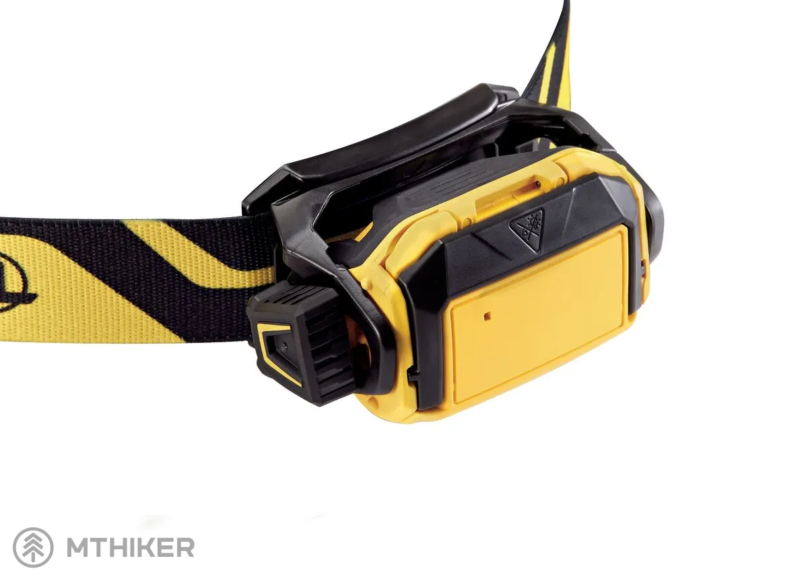
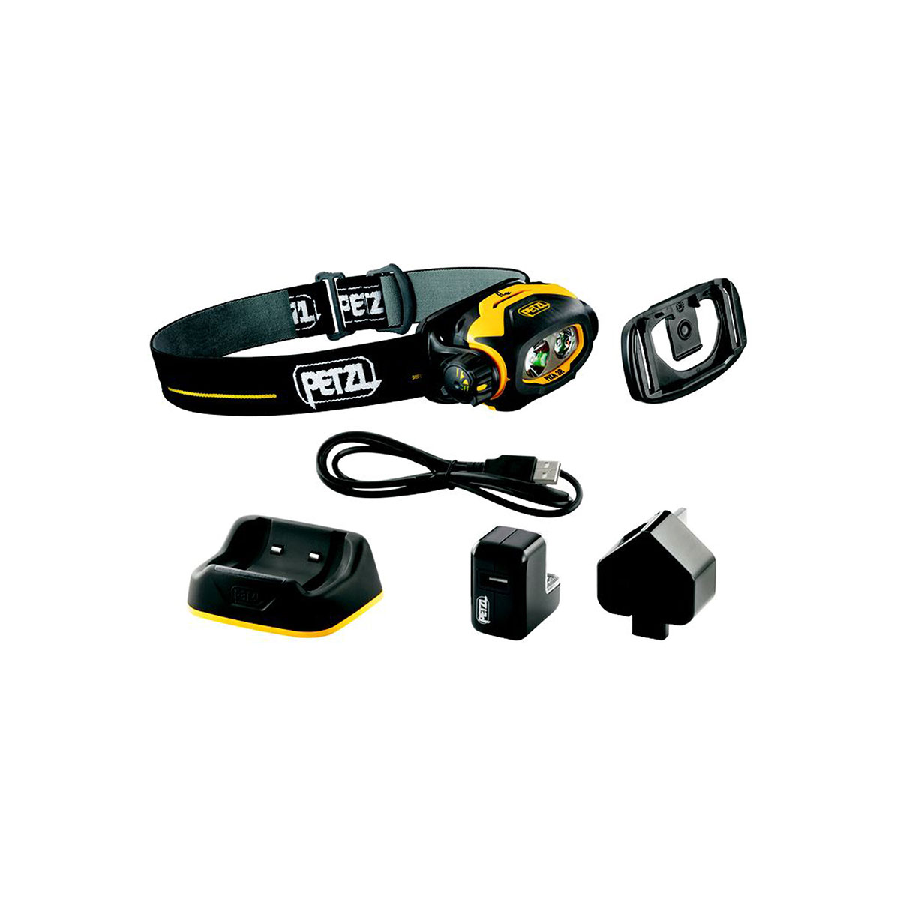
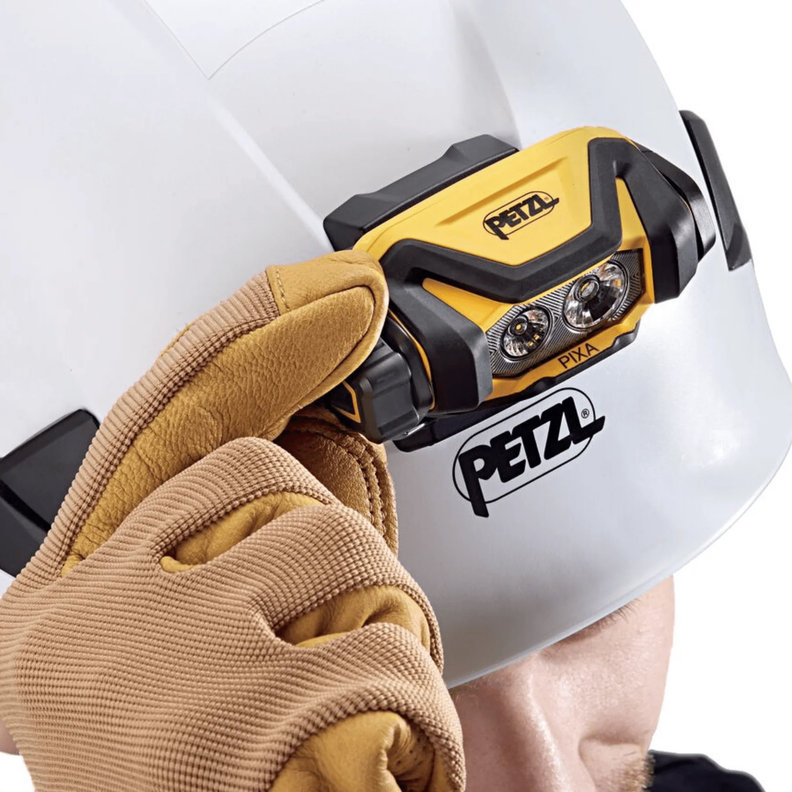

GWO
Lampade frontali: PIXA® si rinnova e illumina ogni ambiente
Ancora più potenti, sempre robuste, versatili e intuitive. Stiamo parlando di PIXA® e PIXA® R, lampade frontali per i professionisti, progettate per i settori più impegnativi dell'industria e della manutenzione, che quest'anno si presentano in una veste completamente rinnovata.
Sempre fedeli compagne di lavoro
Le lampade frontali della gamma PIXA® sono da sempre fedeli compagne per gli addetti impegnati in svariati comparti lavorativi.
Alleate insostituibili anche nelle situazioni più difficili, sono state sviluppate per soddisfare le esigenze dei professionisti che operano in questi ambienti. Si distinguono da sempre per tre qualità essenziali: versatilità, robustezza e praticità. Ma da quest'anno sono ancora più potenti.

Andiamo a scoprire insieme tutte le loro caratteristiche
Le lampade PIXA® sono impermeabili (IP68), robuste (IK08), resistenti allo schiacciamento (80 kg), alle cadute (5 metri, tranne PIXA® R, 2 metri) e agli urti.
PIXA® ha 450 lumen (in modalità BOOST per le esigenze occasionali di massima potenza) e tre tipi di fasci luminosi (ampio, misto e focalizzato). Quando le pile o la batteria sono quasi scariche, la lampada passa automaticamente in riserva con un'illuminazione ridotta.

Dotata della tecnologia CONSTANT LIGHTING, garantisce un'intensità luminosa costante per tutta la durata di utilizzo della lampada, con conseguente riduzione dell'affaticamento oculare dell'utilizzatore.
Si adatta a tutte le situazioni di lavoro, è resistente anche a diverse sostanze chimiche e per questa ragione è destinata agli utilizzi più intensivi e impegnativi dei professionisti, ma non deve essere utilizzata in atmosfera esplosiva.

A contraddistinguere PIXA® è la sua praticità: s'installa facilmente su un casco, grazie al supporto SLOT ADAPT fornito, ed è anche compatibile con il supporto adesivo HELMET ADAPT (disponibile come accessorio) per essere installata su ogni tipo di casco.
Di facile utilizzo, dispone di un singolo pulsante per accedere a tutte le funzioni, si tratta di un selettore rotante facilmente azionabile anche con i guanti. Posizionato lateralmente sulla lampada, può essere azionato senza timore di sporcare il vetro del blocco ottico.
Quando non è utilizzata e per essere stoccata in completa sicurezza, la lampada è dotata di un sistema di rotazione a 180°, che consente di bloccarla proteggendo il vetro.
PIXA® R: la versione ricaricabile
PIXA® R è ancora più potente con i suoi 600 lumen (modalità BOOST) ed è ideale per gli utilizzi intensivi e impegnativi dei professionisti.
Pratica anche lei e di facile utilizzo visto che dispone di un singolo pulsante per accedere a tutte le funzioni. Il selettore è rotante e azionabile con i guanti.
Ricaricabile, PIXA® R è fornita con la batteria ricaricabile CORE PRO (1250 mAh) che è amovibile e può essere sostituita per poter continuare il lavoro.